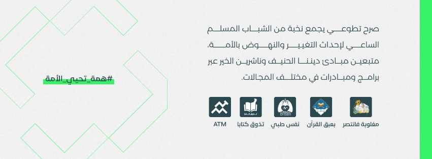

Bunian is a volunteer-led initiative dedicated to empowering Algerian youth. Our mission is to replace "trivial content" with high-value educational material, fostering awareness and personal growth based on solid ethical principles.
I contribute to digital campaigns addressing critical social issues such as digital addiction and family dynamics. We organize webinars and live sessions featuring experts to provide young people with actionable knowledge.
Beyond digital content, I participate in field activities including hospital visits for children and supporting local community initiatives across various states in Algeria to create a tangible positive impact.